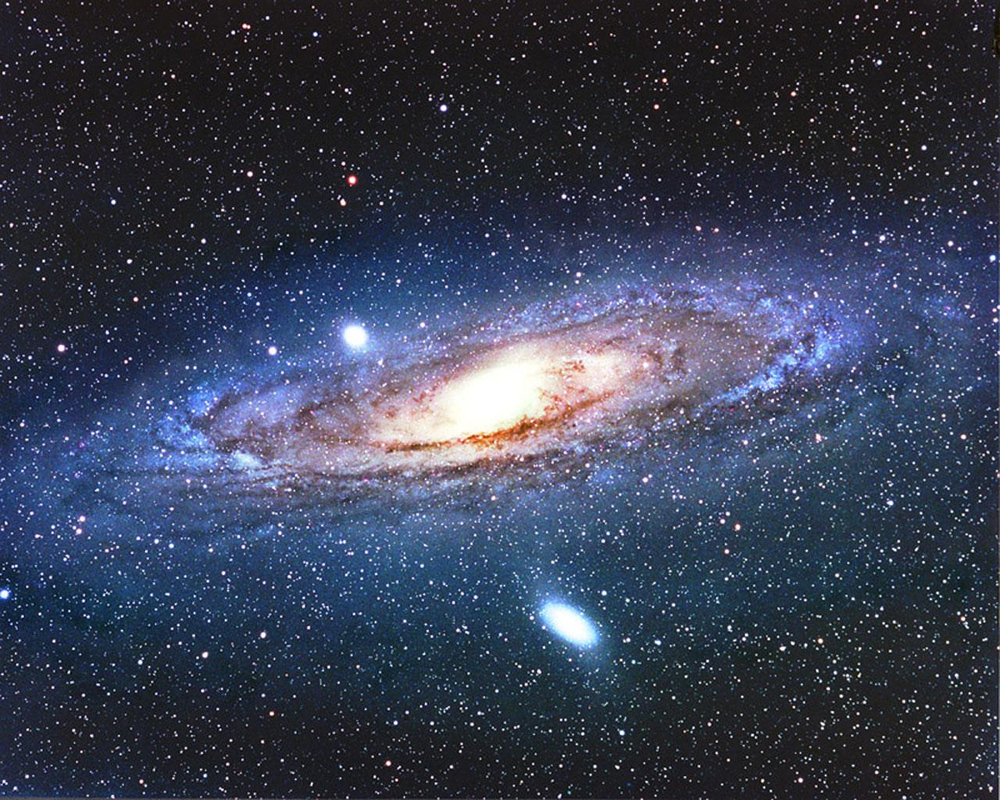
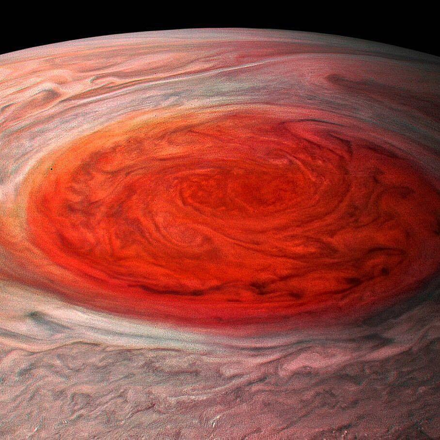
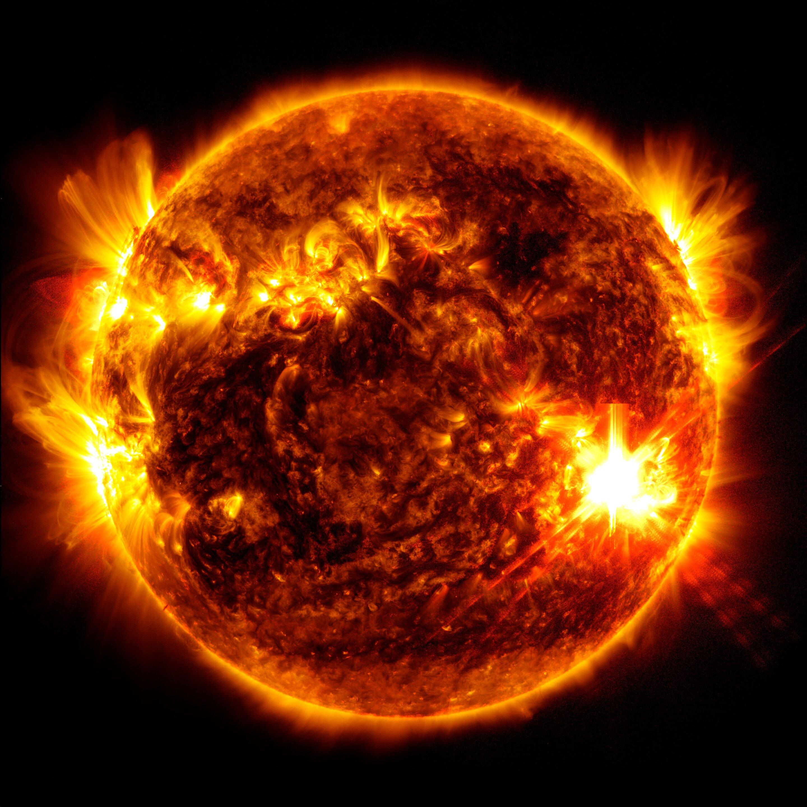
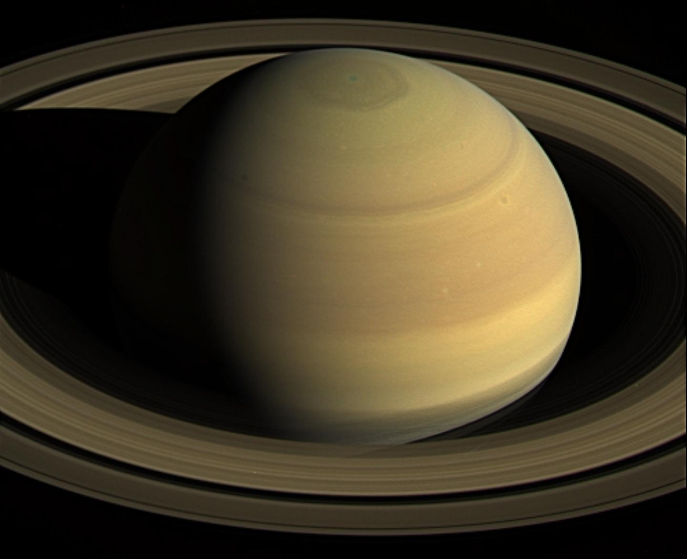

Astronomia
Sobre
Configurações
Usuário
Curiosidades de Astronomia
Este site é destinado a pessoas interessadas em astronomia e apresenta curiosidades sobre o Sistema Solar e os mistérios do Universo.
Aperte!
Curiosidades

1. O passado do Universo:
Olhar para galáxias distantes é viajar bilhões de anos ao passado.

2. Júpiter:
Sua Grande Mancha Vermelha é uma tempestade gigantesca, maior que a Terra.

6. O Sol:
Concentra cerca de 99,86% de toda a massa do Sistema Solar.

4. Saturno:
Seus anéis são formados por incontáveis fragmentos de gelo, rocha e poeira.
“Os céus declaram a glória de Deus; o firmamento proclama a obra das suas mãos.”
-Salmos 19:1
Registre-se para obter Vantagens
Ao se registrar, você recebe informações antecipadas sobre futuras atualizações do site.
Registre-se